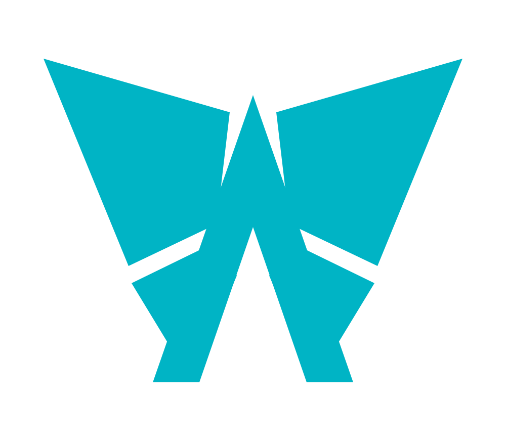
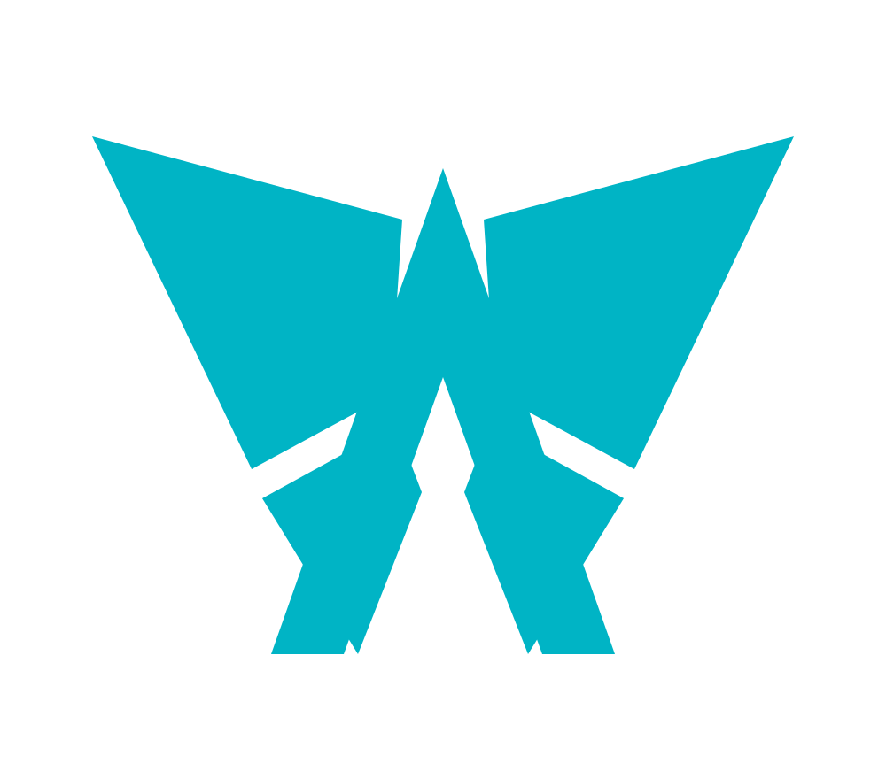
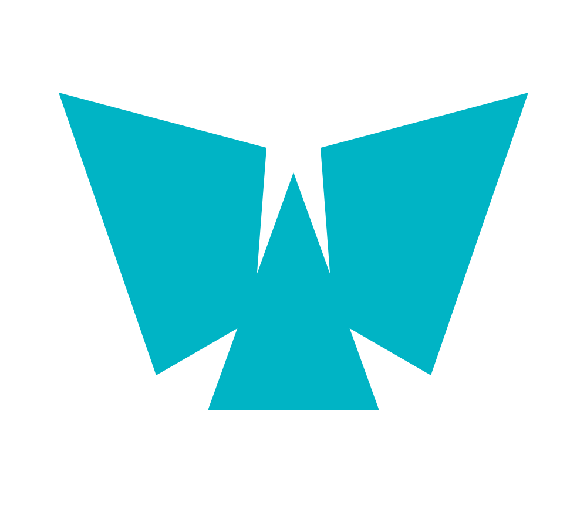
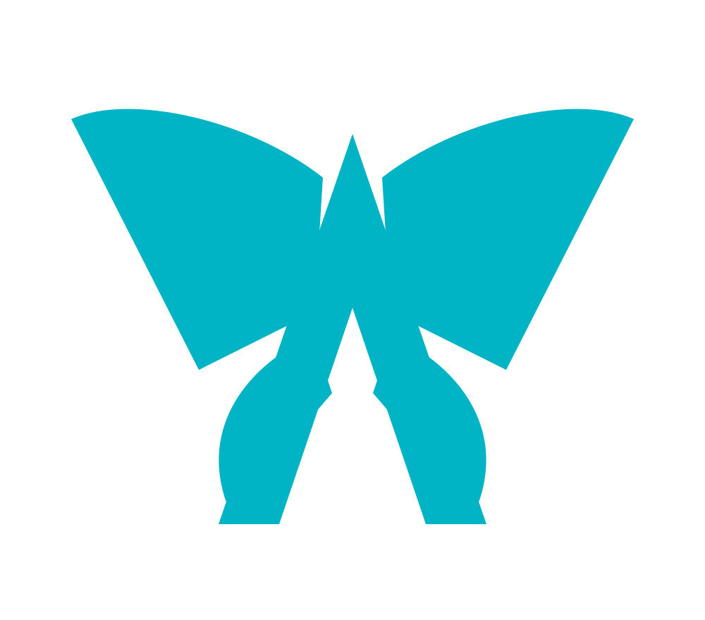

01 · Angular
Bold, architectural and highly technical.
Four one-colour directions · #00B4C5

Bold, architectural and highly technical.

Compact folded facets with a clearer butterfly stance.

The simplest direction: one pyramid framed by two uninterrupted wings.

Professional and approachable, with restrained curves.